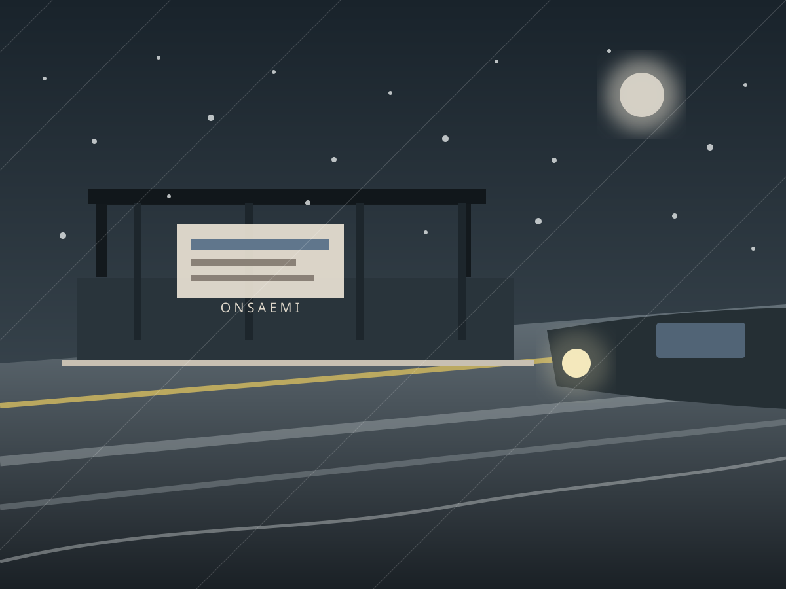
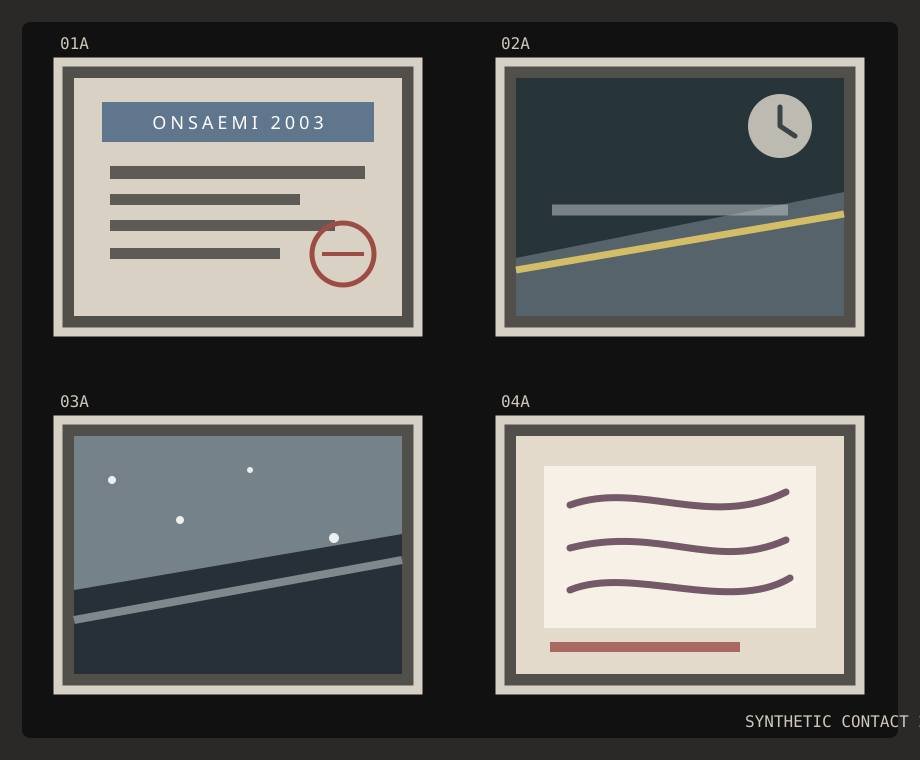
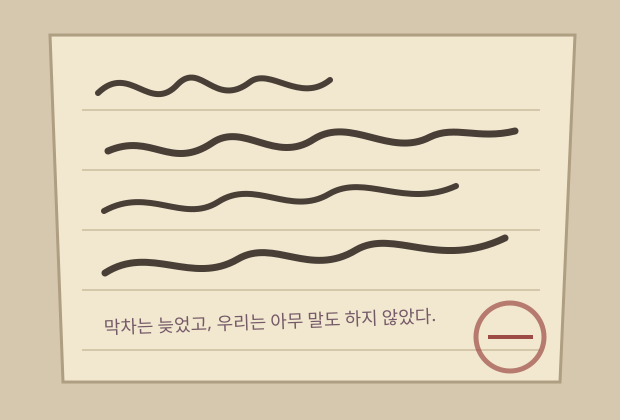
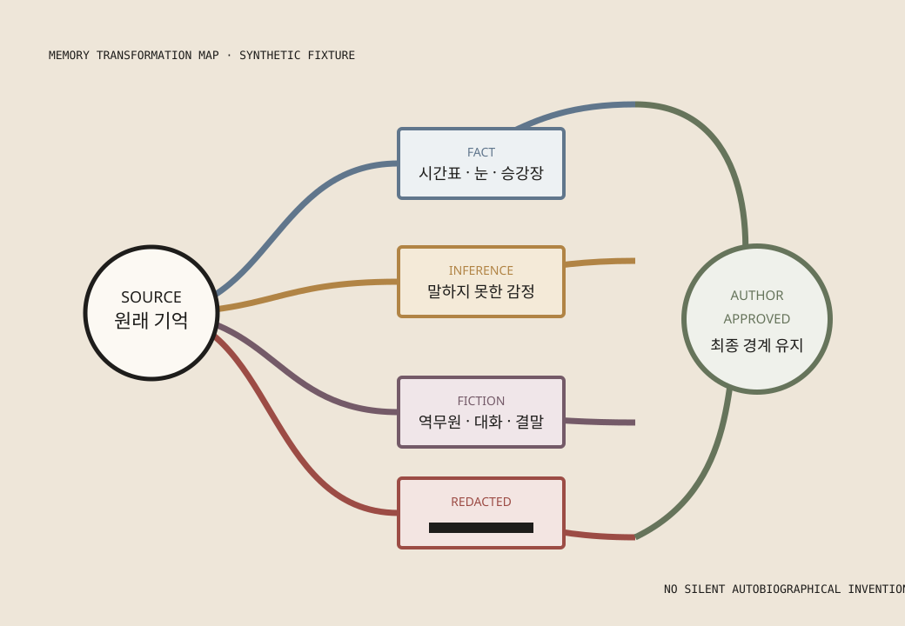
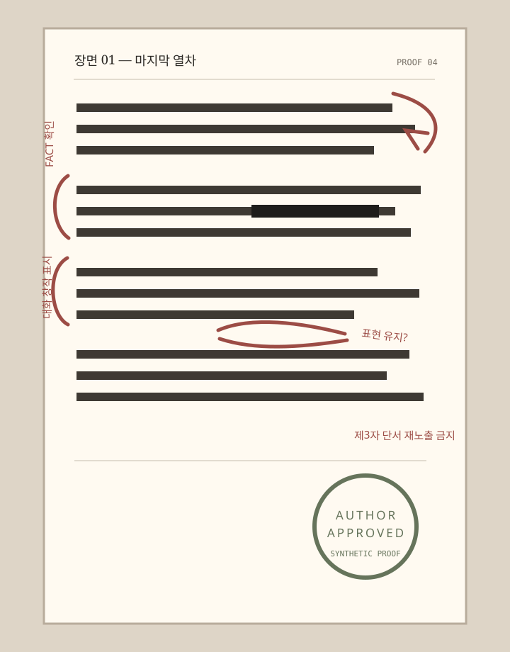

PRIVATE MANUSCRIPT · SYNTHETIC MEMORY 01
기억의 원고
마지막 열차가 오기 전,
눈은 소리를 먼저 지웠다
2003년 겨울 · 가상의 온새미역
AUTHORIAL CONTROL
최종 작가는 사용자입니다
최종 작가는 사용자입니다
Proposed Business 20 · Personal Memory Novel

PRIVATE MANUSCRIPT · SYNTHETIC MEMORY 01
기억의 원고
SOURCE MEMORY / 원래 기억
확인된 자료와 기억의 빈틈을 같은 문장으로 섞지 않습니다. 불확실성은 불확실성으로 남겨 둡니다.

2003년 12월, 밤 10시 이후. 시간표 사진에 막차 표기가 남아 있다.
가상의 온새미역 2번 승강장. 젖은 콘크리트 바닥과 노란 안전선.
돌아갈 수 없다는 생각보다, 아무 말도 하지 못했다는 마음이 더 오래 남은 것으로 보인다.
제3자와 관련된 구체적 사건 및 식별 단서

SCENE DRAFT / 장면 초고
FACT열 시가 넘자 온새미역의 매표창구는 불을 반쯤 내렸다. 2번 승강장 끝에는 마지막 열차의 시각만 남아 있었다.
INFERENCE서진은 떠나는 일이 아니라, 남겨 둔 말의 무게를 견디고 있는 듯했다.
FICTION이모는 장갑을 벗지 않은 채 말했다. “기차가 늦는 건 우리 잘못이 아니야.” 서진은 노란 선을 바라보며 대답했다. “그래도 기다린 건 우리잖아.” 이름 없는 역무원이 멀리서 말했다. “오늘 막차는 천천히 들어옵니다.”
REDACTED그날 두 사람이 역까지 오게 된 이유는 제3자의 사생활과 연결되어 삭제됨.
눈은 선로 위의 쇳소리를 덮었고, 열차가 오기 전까지 역은 누구의 편도 들지 않았다.
TRANSFORMATION MAP / 변형 지도
문학적 효과는 사실을 숨기는 장치가 아니라, 변형의 위치를 드러내는 별도 층으로 기록합니다.

겨울, 막차, 2번 승강장, 시간표 사진
말하지 못한 감정의 잔류
역무원, 대화 세 문장, 상징적 결말
제3자의 식별 정보와 사건 원인
정서적 진실은 유지하되 변형 표시는 삭제하지 않음
TWO VERSIONS / 두 개의 문장
어느 문장이 더 우월한지 점수화하지 않습니다. 무엇을 확인했고 무엇을 변형했는지만 비교합니다.
“2003년 12월 밤, 온새미역 2번 승강장에서 막차를 기다렸다. 눈이 내렸고 열차는 시간표보다 늦게 도착했다.”
“눈은 선로 위의 쇳소리를 먼저 지웠고, 막차가 오기 전까지 역은 누구의 편도 들지 않았다.”
AUTHOR PROOF / 작가 검토본

열 시가 넘자 온새미역의 매표창구는 불을 반쯤 내렸다. 2번 승강장 끝에는 마지막 열차의 시각만 남아 있었다.
서진은 떠나는 일이 아니라, 남겨 둔 말의 무게를 견디고 있는 듯했다.
이모는 장갑을 벗지 않은 채 말했다. “기차가 늦는 건 우리 잘못이 아니야.”
눈은 선로 위의 쇳소리를 덮었고, 열차가 오기 전까지 역은 누구의 편도 들지 않았다.
기억의 원고 · 장면 01
합성 장면FACT 2번 승강장 · 마지막 열차 시간표 · 약한 눈
열 시가 넘자 매표창구는 불을 반쯤 내렸다.
서진은 남겨 둔 말의 무게를 견디고 있는 듯했다.
“기차가 늦는 건 우리 잘못이 아니야.” 이모가 말했다.
REDACTED제3자 관련 사건
모바일 장면 읽기
출처 표식과 변형 라벨을 본문 흐름에서 분리하지 않습니다.